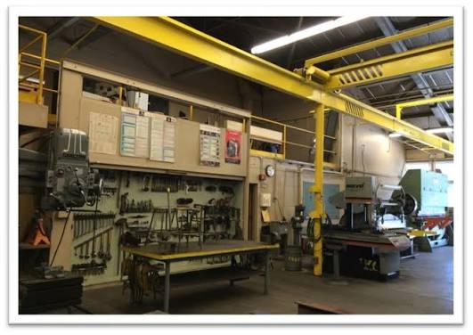

Machining & Fabrication

Project Overview
Hands-on manufacturing showcase covering manual and some CNC machining, welding, and fabrication workflows.
My Role
As a Shop Technician and structural-team member, I supported students and project teams with machine setup, safe equipment operation, fabrication, troubleshooting, and the production of mechanical components.
Design
Interpreted SolidWorks models and engineering drawings to plan part fabrication, identify critical dimensions, select manufacturing methods, and consider workholding, tolerances, and manufacturability before machining.
Manufacturing & Fabrication
Set up and operated manual mills, lathes, CNC mills, CNC plasma equipment, welding equipment, and Hydrabend machinery to manufacture and assemble mechanical components. Used appropriate measuring tools, workholding, and fabrication sequences to produce parts safely and accurately.


Testing & Troubleshooting
[ADD TESTING DETAILS: fit-up checks, quality checks, rework, and process improvements]
Final Result
[ADD FINAL RESULT]
What I Learned
[ADD LESSONS LEARNED]